Presentify for educators · version 2.3.3
The Presentify educator handbook
Presentify keeps an educator’s teaching day in one place: the assignments you’re scheduled for, the sessions you run, who was present and for how long, what you taught, and how each student is progressing. This handbook walks through every screen in the order you meet it.
The version in your app store may differ slightly from the one described here. Your app’s version number is printed at the bottom of the Login screen and on your Profile screen — worth checking before reporting anything as a bug.
Most screens have a ? button in the top-right corner of the title bar. It opens a short explanation of that screen. In Light appearance the button may be hard to see — tap the top-right corner anyway and the help still opens.
Signing in
Your account is created by an administrator. You set your own password from the invitation email, then use it everywhere — web, iOS and Android share one login.
You can’t create a Presentify account from inside the app. If you don’t have your sign-in details yet, contact whoever set up Presentify for your program — usually your program or school coordinator.
First login
An administrator sends you an invitation email with instructions for creating a password. Once that’s done:
- Enter the email address your Presentify account was created with.
- Enter your password. To check what you typed, tap the eye icon at the right of the field; tap it again to hide it.
- Tap Login, the wide button at the very bottom of the screen.
If the credentials are correct you land on the Assignments screen.
If your email or password is wrong
You stay on the Login screen and nothing is lost. On a phone or tablet a banner reads Login Error and Invalid credentials. In a web browser you may get no message at all — the screen just stays as it is.
- Wait a few seconds, in case your details are still being checked.
- Check for typos, especially in your email address.
- Tap Login again.
Once you’re signed in, you stay signed in: closing the app and opening it again takes you straight back to your assignments. You see the Login screen again only if you log out, if the app signs you out for inactivity, or if you haven’t opened it in a very long time.
Ticking Remember me keeps your email address filled in after you log out. Only use it on a device that is yours alone — never on a shared school computer.
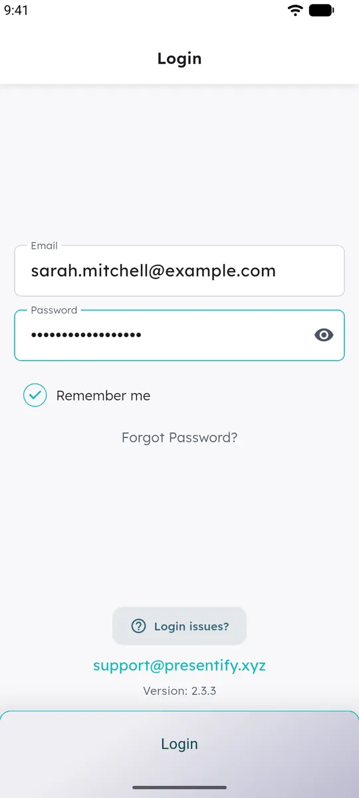
Forgot password
- On the Login screen, tap Forgot Password?
- The screen changes: the password field disappears, the button at the bottom now reads Forgot Password, and a Back to Login link takes you back if you change your mind.
- Enter the email address associated with your account.
- Tap Forgot Password at the bottom of the screen. On a phone or tablet a banner confirms: Password reset link sent. In a web browser you may see no confirmation at all, even though the link was sent — check your email rather than tapping the button again.
- The email with instructions arrives within a few minutes.
Check your Spam or Junk folder first. If nothing has arrived after a few minutes, make sure you typed the email address your account actually uses, then request the reset again — or contact whoever set up your account.
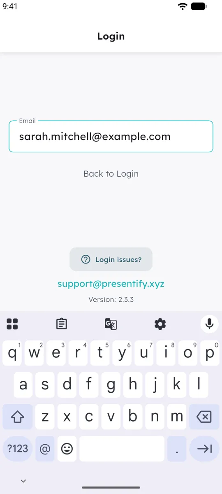
Login Assistance
Tap Login issues? at the bottom of the Login screen for a five-point checklist, a link to this handbook, and the support address.
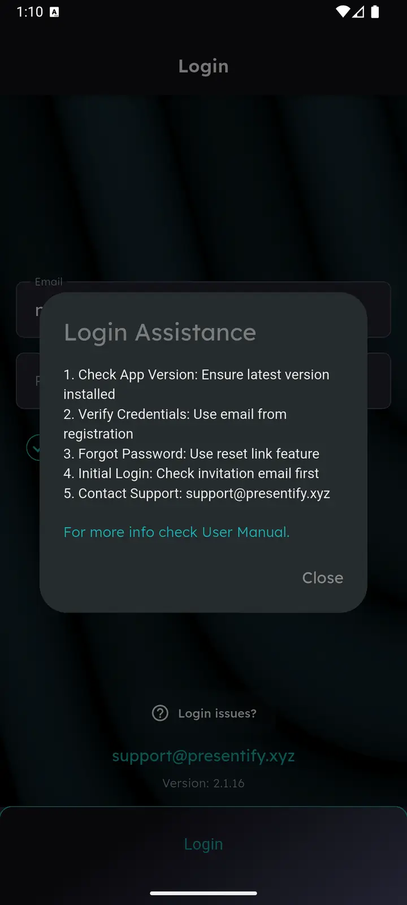
Version update & hard reload
When a newer build is required, the mobile app prompts you to update. On the web there is nothing to install — instead you are asked to hard reload the page, and the exact shortcut for your browser is shown in the dialog.
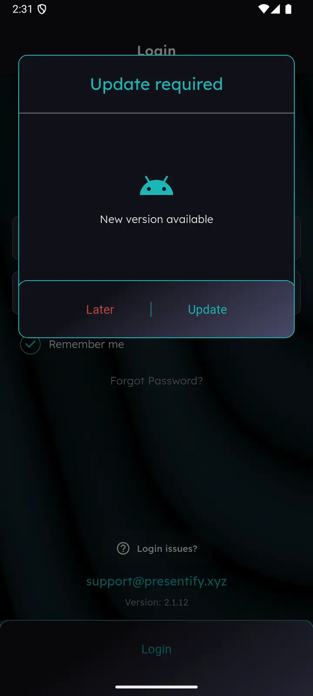
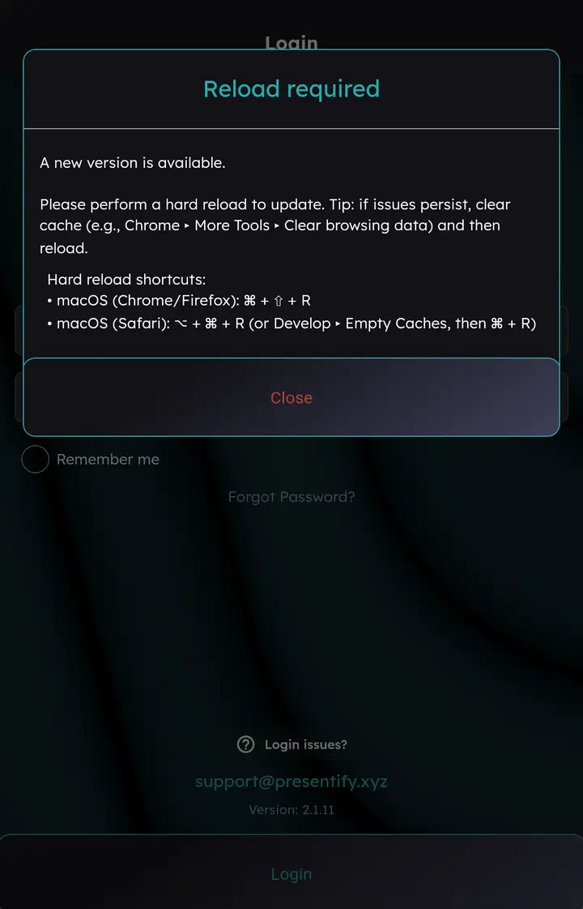
Why a hard reload?
A normal refresh may reuse files your browser saved earlier (the cache). A hard reload fetches the whole page again, which is what you want when the site shows stale information or looks broken.
| Browser | Windows / Linux | Mac |
|---|---|---|
| Chrome, Edge, Brave, Opera | Ctrl+F5 · Ctrl+Shift+R · Shift+F5 | Shift+⌘+R |
| Firefox | Ctrl+F5 · Ctrl+Shift+R · Shift+F5 | Shift+⌘+R |
| Safari | — | ⌥+⌘+R, or ⌥+⌘+E then ⌘+R to empty the cache first |
| Mobile browsers | No shortcut. Pull down on the page, or use the reload button in the browser menu. | |
If you don’t see it, turn it on under Safari → Settings → Advanced → Show Develop menu in menu bar.
Automatic logout for inactivity
To protect student data, Presentify signs you out after 10 minutes of continuous inactivity.
- At 9 minutes, a Session timeout warning dialog appears.
- It counts down 60 seconds.
- Tap I’m still here. The box closes and you stay signed in, on the same screen. Tapping anywhere else does not count.
- Ignore it and you are logged out at the 10-minute mark.
Attendance details you typed but never saved are lost on logout. Save as you go rather than at the end of a long session.
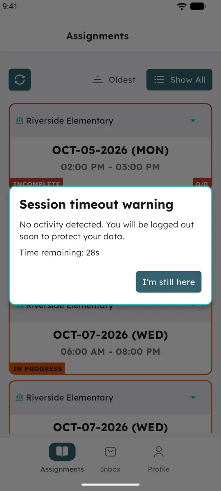
Assignments
An assignment is your permission slip and your calendar window in one. Each belongs to a single educator and defines the time range in which that educator may create sessions, at one school, in one district, for one program.
An assignment is also your way in: opening one shows the sessions, students and groups for that assignment’s school and program.
- The list opens on the assignments around today, with the oldest at the top — scroll down to reach today. Tap Show All for your complete list; the button then reads Show Less and takes you back.
- Tap the arrow on a card to expand it and see the district, program and program types. The program name is shown only here, so if several cards look the same, open each one and read the Program line.
- To reload the list, tap the refresh button at the top left, or pull down on the list and let go. Refreshing keeps you on Show All or Show Less, whichever you were viewing.
Each card shows the school name at the top, the date with its weekday — for example OCT-07-2026 (WED) — and the time range. A flag in the bottom-left corner says where the assignment stands; for one that is over, a counter in the bottom-right corner shows how many of its sessions are completed.
The ? in the top-right corner opens Assignments Overview; tap Close to go back.
Tap the Assignments tab at the bottom of the screen, or the back arrow at the top left of an assignment you opened. On the Assignments screen itself, your device’s back button and your browser’s back button do nothing — use the tabs at the bottom instead.
Long assignment lists now load in batches as you scroll instead of making you wait for the whole list.
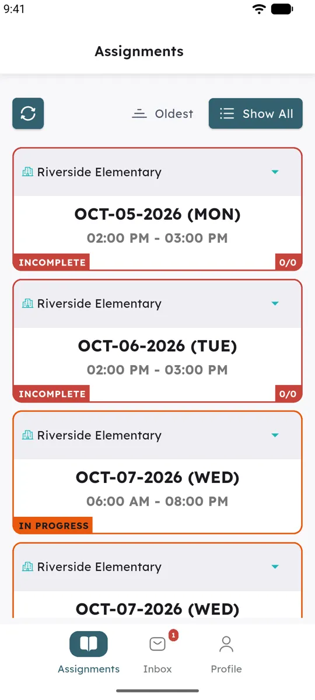
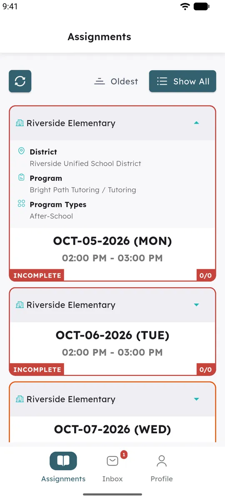
The assignments screen
Tap anywhere on a card except the arrow to open the assignment. Its short code is at the top of the screen — for example ASSIGNMENT: TM-AY2403-U — and below it you find:
- the selected assignment’s information at the top;
- Program Type — auto-selected when only one is available, otherwise you must choose one before the row of tabs activates;
- the row of three tabs — SESSIONS, STUDENTS, GROUPS;
- the view for whichever tab is selected.
The substitute (SUB) badge
A SUB badge means a substitute has been assigned to cover that assignment. Tap the badge to see the substitute’s name and code — the box is titled Absent Educator; tap Close to put it away.
Reading the flags
The word on the flag tells you where the assignment stands. The card’s border matches it, but go by the word:
| Flag | Meaning |
|---|---|
| UPCOMING | Hasn’t started yet. |
| IN PROGRESS | Happening now. |
| COMPLETED | Over, and every session in it has been completed. |
| INCOMPLETE | Over, and not every session has been completed — or none was recorded. |
| PAST | Over, and the app doesn’t have the session numbers to say. |
The counter on a finished assignment reads like 2/3: two of three sessions completed. 0/0 means no session was recorded. A PAST card has no counter — that does not mean zero sessions were completed.
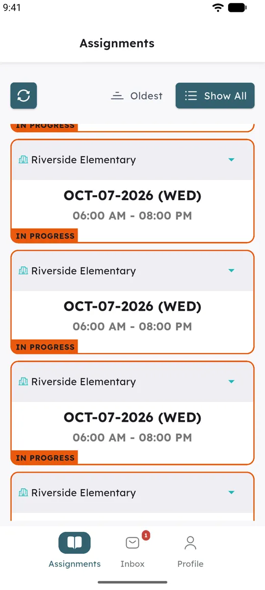
Show All and its filters
The filters appear only after you tap Show All:
- Time filter (left) — All, Upcoming, In Progress, Past due, sometimes Unknown. Each option shows a count, like Past due · 2.
- Completion filter (right) — locked with a padlock, reading All past, until you choose Past due. Then choose All past, Complete, Incomplete or No data.
- Sort — the button beside Show Less switches between Newest and Oldest. On the shorter opening list it only shows the current order.
An empty list says why, matching the filter you chose — for example No past due assignments. or No assignments without session data. (for No data). Unable to load assignments means something went wrong while fetching the list, and Still loading assignments… means it’s on its way; refresh the list if you see either.
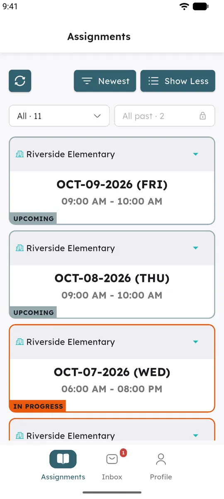
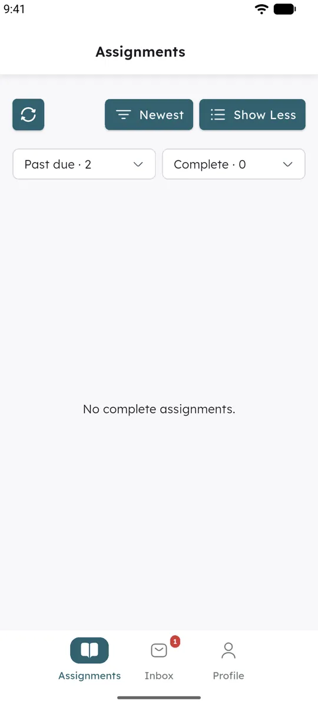
Sessions
A session is one block of teaching time: who taught, at which school, which students were there, for how long, and on what subject. Everything else in Presentify hangs off it.
You reach sessions from the Assignments screen: tap an assignment, and its SESSIONS tab opens. The STUDENTS and GROUPS tabs sit beside it.
If the tabs look different from what you expect, see Inside an assignment.
Open, Locked and Ended
Once an assignment has at least one session, the sessions list has three tabs: Open, Locked and Ended, each with a count. It always opens on Open. Which tab a session is in decides what you can still change.
A new session starts here and stays open for about 24 hours — not the length you chose: a 45-minute session doesn’t close after 45 minutes. Its card counts down, for example OPEN: 23:47:12 (hours : minutes : seconds). While it’s open you can fill in and change everything. What a student needs before they count as complete depends on your program — often a time, a subject or a teacher, and a reason for each absent student. When everything is in, the card reads COMPLETED: 100%.
Not finished within about 24 hours — a session sitting at 90% at the deadline locks at 90%. It can no longer be edited.
Completed 100% and closed. The finished state.
A session moves on its own when its time runs out, whether or not you’re in the app. If one seems to have disappeared, tap Ended or Locked. If it closed before you finished, ask whoever manages Presentify for your program to reopen it — you can’t reopen it yourself.
Switching a student on doesn’t save anything by itself, and a present student only counts once everything your program asks for is saved. About 24 hours after a session starts it closes with whatever you entered — complete sessions go to Ended, the rest to Locked. Finish attendance the same day.
The sessions screen
Every session for this assignment. Each card shows the date and time range, how many students were present, the session code, a completion bar and the status. If your program counts students instead of naming them, the card shows just the number you entered.
- Status tabs New — Open, Locked and Ended tabs with counts, so you can jump straight to the sessions that still need work.
- Refresh — tap the refresh button (two circling arrows) beside +. If a list has no such button, leave the screen with the back arrow and open it again.
- Create — the + button, top right.
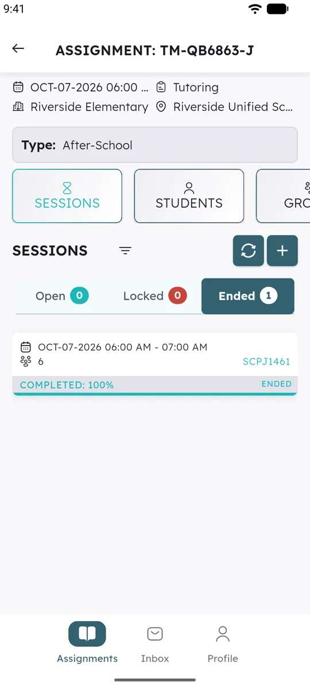
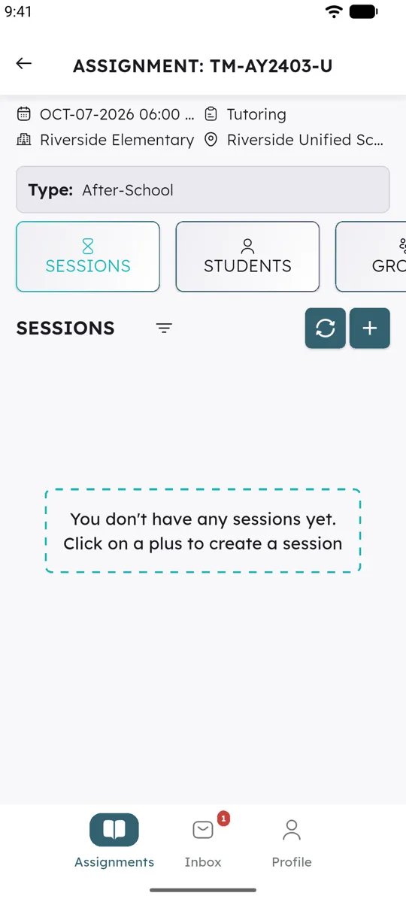
Looking at an ended session
You can open an ended or locked session to look at it, but nothing can be changed: the switches don’t move and there’s no Save Attendance Details button. When you come back, the list is on Open again — tap Ended to return to it.
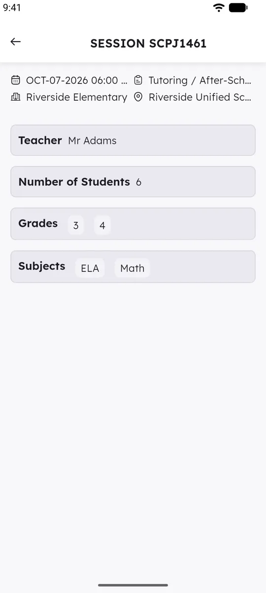
Creating a session — if you mark each student
If you mark each student present or absent, you start by choosing who is in the session — a saved group, or students picked one by one.
- Choose your students. On SELECT STUDENT GROUP, tap a group that has students in it. To pick students one by one instead, tap Continue Without a Group, tick the students, then tap Apply Changes (the number shows how many you ticked). If you have no groups yet, tap Check Groups page to make one — see Chapter 11. Tapping a group with no students in it does nothing; pick another group.
- Set the time. The CREATE SESSION screen shows the AVAILABLE TIME RANGE. Start Time is already filled in. Tap a Quick Durations button (30 min, 45 min, 60 min) to set the end in one tap — a button is grayed out if that length would run past the end of the class period. For any other length, tap End Time, choose a time from the list and tap Confirm Selection. The Duration line confirms it.
- Fill in anything else the screen asks for. Depending on your program, the screen also asks for a subject, a topic, a teacher, Student Engagement, or a Session Reflection box for each grade. Start stays grayed out until everything required has a value — including a teacher, even where nothing marks it as required.
- Tap Start. This creates a session with every student marked absent.
- Set each student’s attendance. Toggle the switch on for the students who attended — the knob moves to the right and the present count goes up by one — then tap Save Attendance Details.
- Give a reason for each absent student. Most programs need one before the list can be saved; the line above the list reads To save, add a Reason for: and their names. Tap the absent student’s row, tap Select reason for absence, pick a reason (or Other to type one), then tap Save Attendance Details.
- Fill in the details. Tap a present student’s card to add duration, subject and anything else — see Chapter 05. Save the list first — with unsaved changes the app says Please save attendance details first.
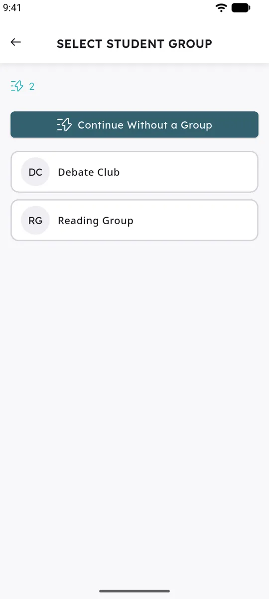
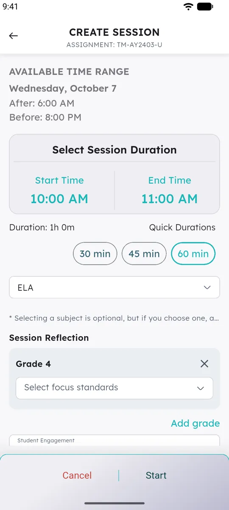
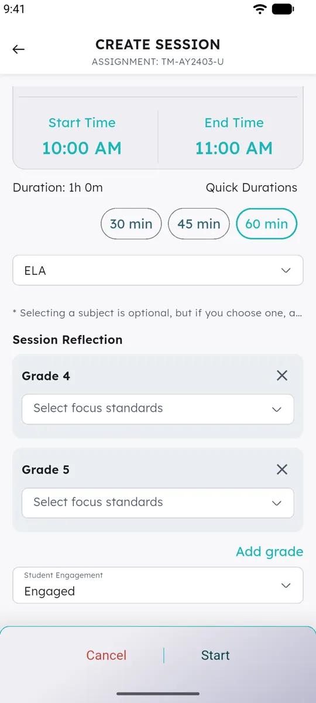
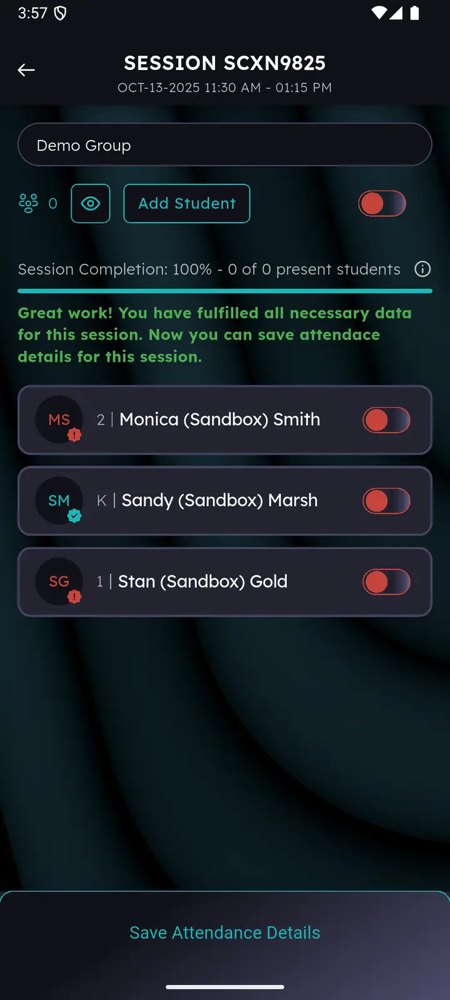
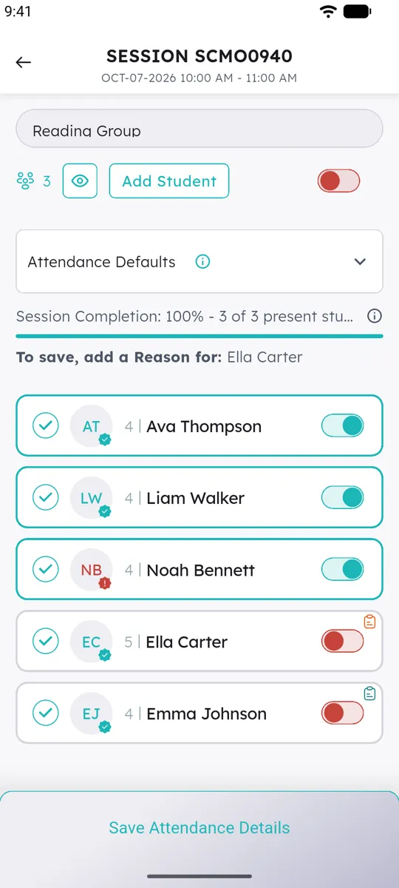
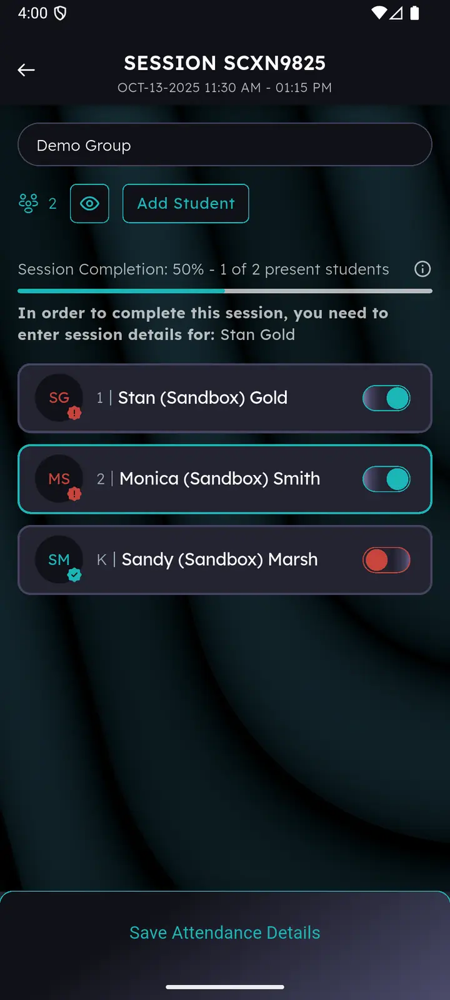
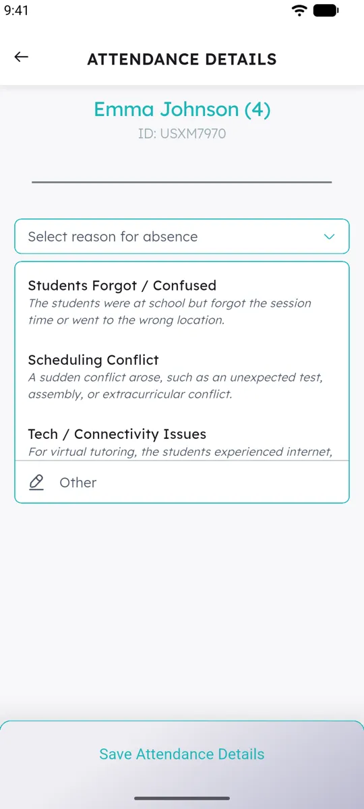
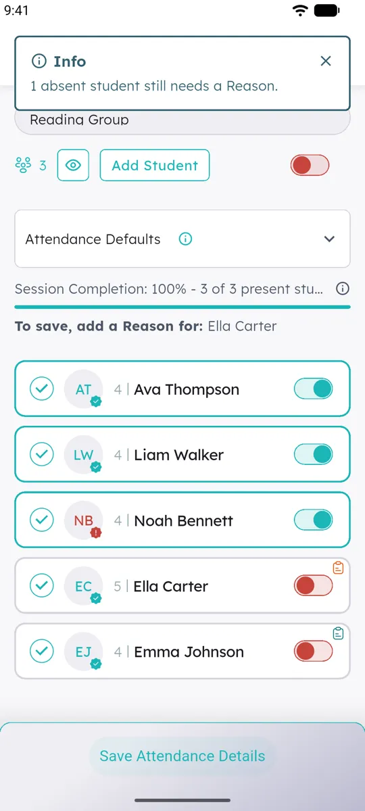
- Depending on your program, a question may appear first: No session reflection added… (Continue or Cancel), or a warning that topics can’t be edited later (Save anyway or Cancel).
- Session Overlap Detected — the time overlaps a session that already exists. Nothing is created and your times stay filled in; change the time and tap Start again.
- This assignment has no scheduled time… — Start will never become available. Report it to your administrator.
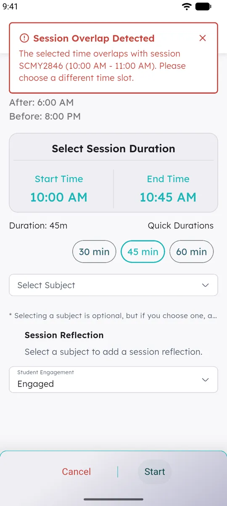
Four controls worth knowing
- Eye icon — shows or hides absent students, handy for a long list where only a few attended. After every save, the list shows only present students and the eye is crossed out. Nothing was lost — tap the eye and the absent students come back, still marked absent.
- Add Student — adds someone who wasn’t in the original group, for this session only.
- Mark everyone present — the switch at the right end of the row above the list. It’s there only until your first save of the session.
- Attendance Defaults — in some programs, a panel above the list sets values like time or subject once for every student who doesn’t already have their own. Values you set by hand are left alone.
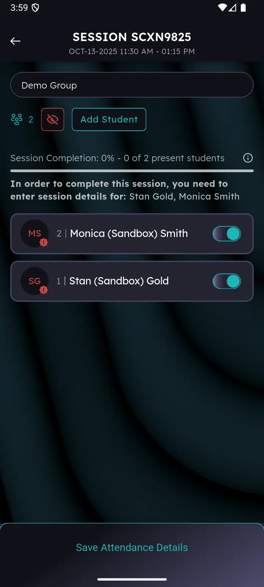
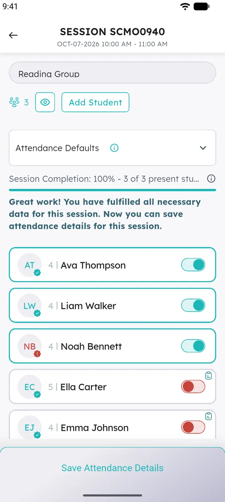
The line under the progress bar tells you what’s left: In order to complete this session, you need to enter session details for: and the names, or To save, add a Reason for: and the absent students still needing one. When it reads Great work! You have fulfilled all necessary data for this session., you’re done. The end of the Session Completion line can be cut off on a phone; the numbers at the start are the part that matters.
The app asks Looks like you have unsaved changes. Continue? Tap No to stay with your edits. Yes leaves and throws your unsaved changes away. There is no Cancel.
Creating a session — if you enter a number of students
Some programs record a head count rather than named students. Creating one of these sessions is shorter: set the time, then fill in one form.
- Set the time inside the available range — use Quick Durations or End Time — and tap Start. There is nothing else to fill in here. An empty session is created.
- Fill in the fields — teacher, number of students, grades and subjects.
- If the teacher isn’t in the list, tap the pen icon and type the name. Don’t save yet.
- Choosing Other as a subject opens a free-text field — separate multiple subjects with commas.
- The X beside the teacher clears it after asking first: Yes clears, No keeps.
- Depending on your program, the subject may already be set at the top, with no Subjects box.
- Tap Save. You’re back on the sessions list, with a message that the session was updated.
- If a box is empty, Field is empty appears under it. Fill it in and tap Save again.
Saving doesn’t close the session. Until it closes on its own (about 24 hours after it starts), tap its card in the Open tab and the FINISH SESSION form opens again with your answers filled in. Once it moves to Ended, its details are read-only.
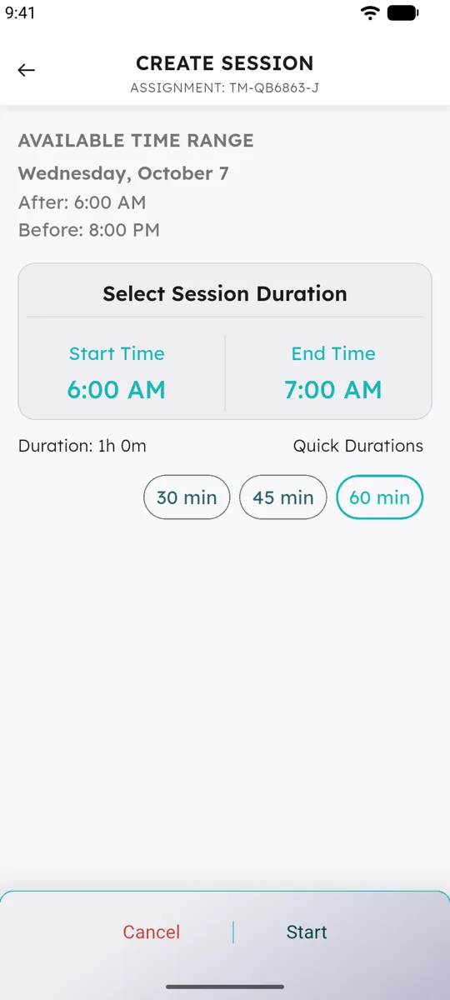
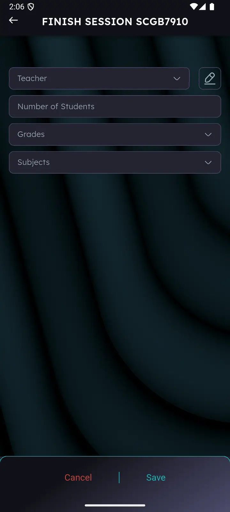
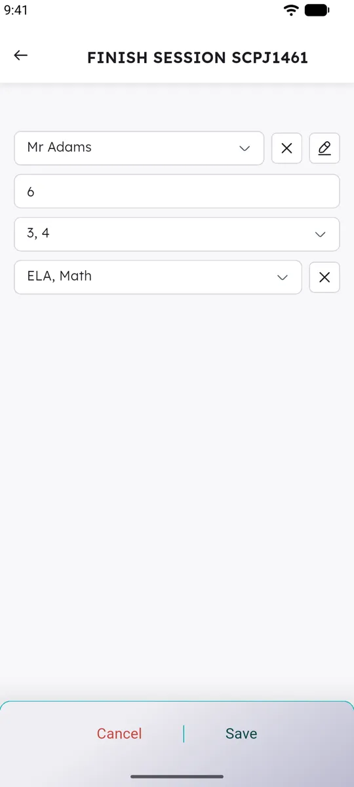
Deleting a session New
An Open session created by mistake can now be removed from the app: tap the trash icon on its card in the Open tab. Tap Delete to confirm, or Cancel to keep it.
- Deletion cannot be undone.
- If the session already has assessments attached, Presentify warns you before removing them along with it.
- Cancel at either step leaves the session untouched.
- Locked and Ended sessions cannot be deleted — contact support instead.
Attendance details
The ATTENDANCE DETAILS screen is where a present student turns into a complete record. Depending on your program it asks for time in and time out, a subject, a teacher, student engagement, a topic and rating — and optionally an assessment and a session reflection.
Attendance can only be changed while the session is Open.
Updating a student’s attendance
- Tap a present student’s card (switch on).
- Set time in and time out. The duration in minutes is calculated for you.
- Choose the subject. Selecting a subject is what unlocks the assessment bank list. In some programs the subject is already set and shown in a gray box.
- Depending on your program, also choose a teacher (tap + to add one), Student Engagement, or a Topic and Rating. Fill in everything the screen asks for — some fields only say they’re missing when you save.
- Optionally tap Add Assessment to open the assessment banks — see Chapter 09.
- Narrow a long bank list with the Assessment Type and Grade filters.
- Tap Save Attendance Details.
Save the student list first — with unsaved changes the app says Please save attendance details first. In programs that ask for a reason, tapping an absent student opens a shorter screen that only asks why they were absent.
Leaving with unsaved changes asks Continue? — No keeps you here with your changes; Yes leaves and throws away what you haven’t saved.
A Submit Error banner means something required is empty — look for Field is empty under a box, fill it in, and save again. A Connection error banner keeps you on the screen with your entries; tap Save Attendance Details again once you’re back online.
A bank with a filled title bar already has an assessment for this student — the quickest way to see what you’ve already entered.
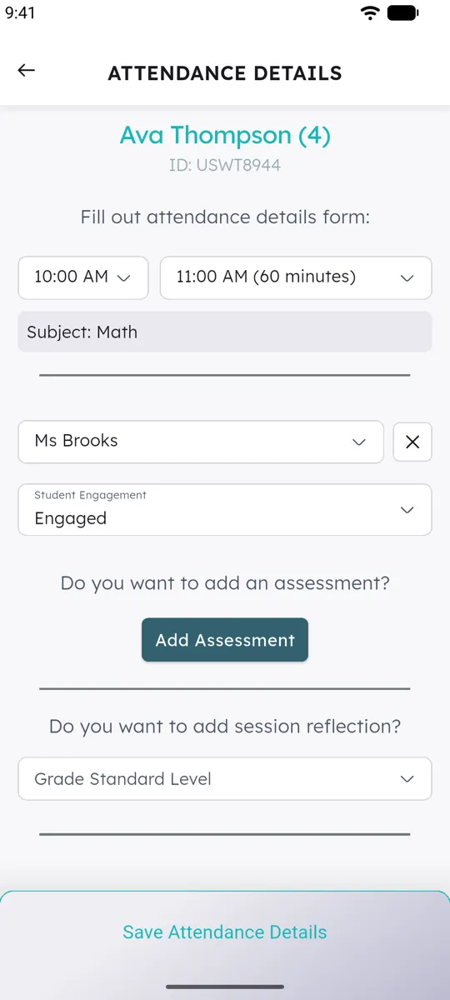
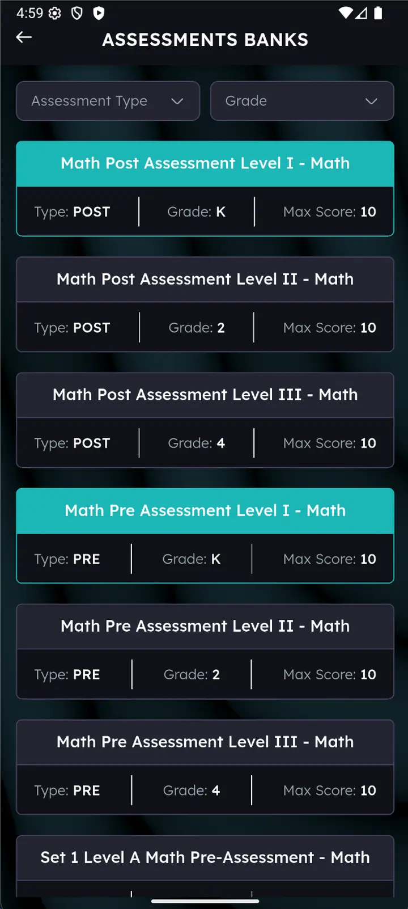
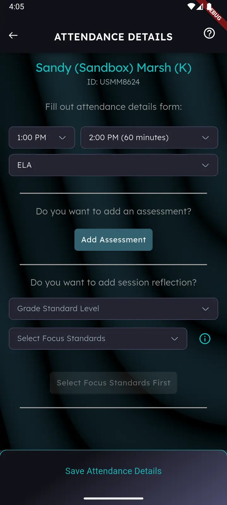
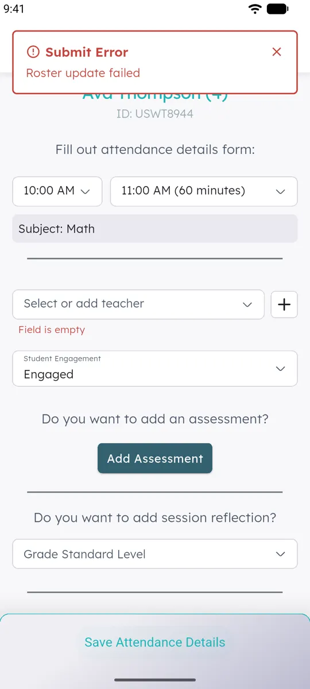
Session reflections
A session reflection records how well a student grasped specific focus standards in that session, on a four-point scale. Depending on your program, the reflection section appears inside Attendance Details.
Depending on your program, the CREATE SESSION screen has a Session Reflection box for each grade. Choose a subject, tap Select focus standards in a grade’s box, and set a rating; tap Add grade for another grade. What you choose there is copied onto each student in that grade, so it’s already filled in on their Attendance Details. If you skip it, the app asks No session reflection added… — tap Continue to create the session anyway.
Adding a reflection
- Tap a present student’s card to open Attendance Details.
- Fill in the fields the screen asks for.
- Choose a Grade Standard Level from the dropdown. This filters which focus standards are available.
- Select one or more Focus Standards. In programs that use topics, Topic and Rating are separate boxes on the same screen.
- Tap Add Session Reflection to open the Focus Standards screen.
- Rate every standard from 1 to 4, then tap Submit Ratings.
- After submission you can Update Ratings or go back to Attendance Details.
- 1 — Minimal Understanding
- 2 — Partial Understanding
- 3 — Proficient Understanding
- 4 — Thorough Understanding
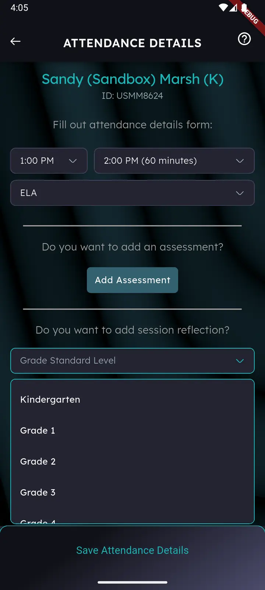
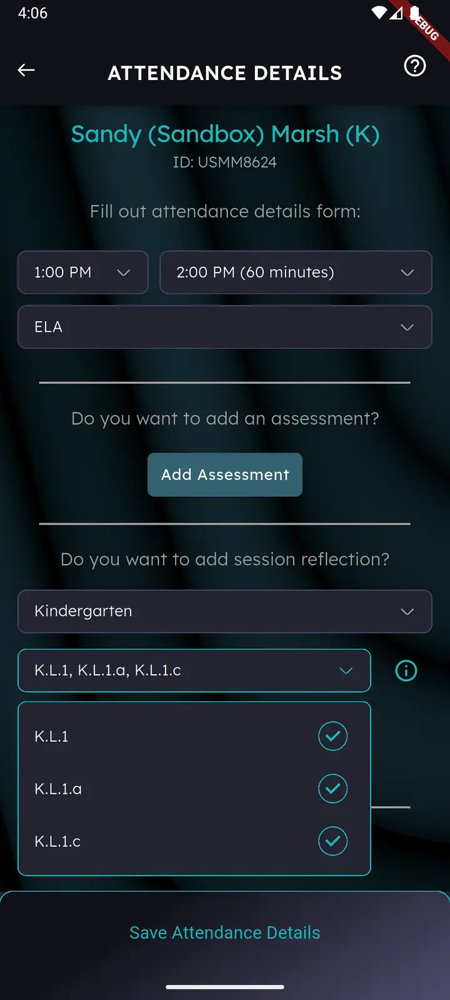
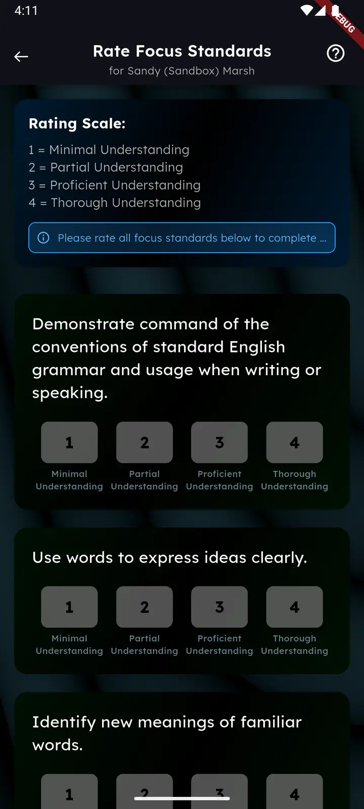
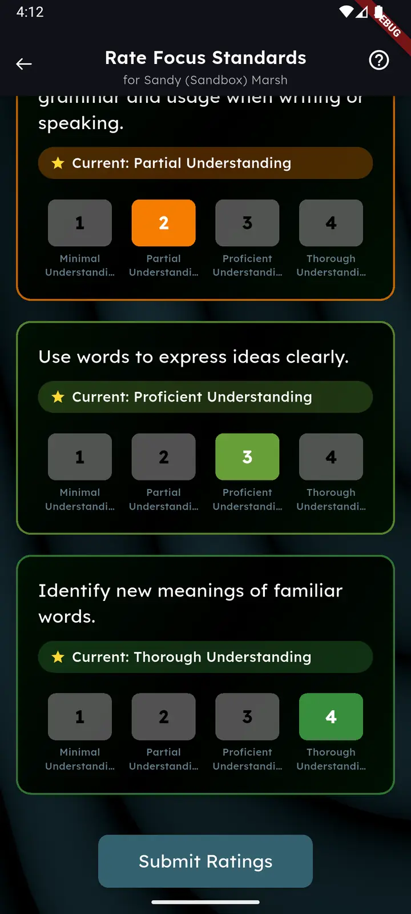
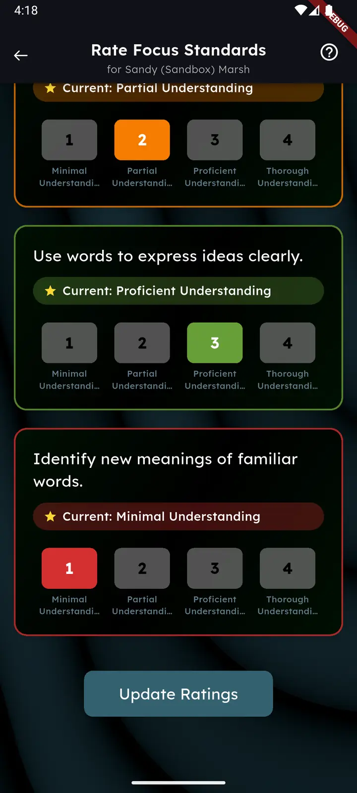
Editing, clearing, and multiple reflections
Back on Attendance Details, the saved reflection is summarized per standard with its level, plus two actions: Edit Ratings and Clear Reflections.
A student can now carry more than one session reflection for the same session — useful when a single block covers two subjects or two standard sets. Add another with Add Session Reflection; each is listed separately.
Reflections can be edited or deleted as long as the session is Open. After it locks or ends, they are read-only.
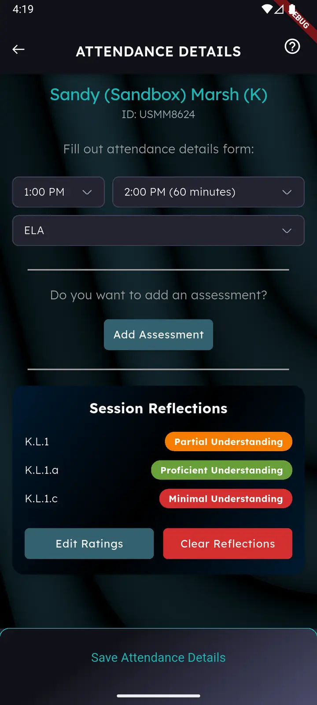
Students
Administrators load the school’s students, but educators can add students too — from the STUDENTS tab, while building or editing a group, or with Add Student in a session that’s still open.
In programs where you record how many students attended rather than each student by name, the STUDENTS and GROUPS tabs read This view is not supported for the selected options. There’s nothing to do on either tab for that assignment.
- Search and filter — type part of a name in Search ..., or narrow the list by Verified Status (All, Verified, Unverified) and Grades. The × next to Grades clears only your grade choice. To see everyone again, also clear the search and set Verified Status to All.
- Sort — tap the three-line button next to + to reverse the order of the list.
- Refresh — pull down on the list. If pulling down doesn’t refresh the list, go back and open the assignment again.
- Open a profile — tap any student card.
Each card shows the student’s initials, grade and full name. A small badge on the initials shows whether their information has been verified: a tick for verified, an exclamation mark for not yet verified.
If the school has no students yet, the list reads No students found for this school. with an Add Student button beneath it. If your search or filters match nobody, it reads No students found...
Adding a student
- Tap the + button.
- Enter first name, middle name (optional), last name and grade. Fields marked
*are required. - Tap Save.
The Add Student sheet shows your school and district at the top. The grades you can pick depend on your program — a program for older students may offer only grades 9 to 12.
If a required field is empty, an error appears under it and nothing is saved. Otherwise the sheet closes, a message reads Student “…” added successfully!, and the new student appears in the list with the not-yet-verified badge.
The student joins the school’s student list. Adding them to a group is a separate step — see Chapter 11.
Search the list first. There is no way to remove a student from the school’s student list yourself, so a duplicate has to be cleaned up by support.
If you use your device’s back button while the Add Student sheet is open, it closes at once and drops what you typed. There’s no warning. Reopen it and start again.
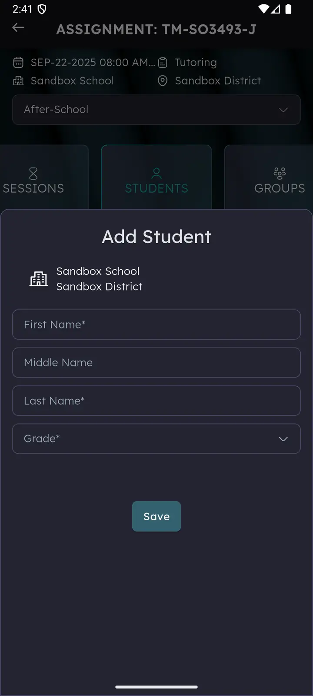
Student profile
One student, everything on record: their sessions, assessments, surveys and progress checks, and a summary report.
Four ways in
- STUDENTS tab → tap a student card.
- Groups screen → open a group → long-press a student card → tap the open icon.
- Session → open the session → tap a present student → Attendance Details → tap the student’s name.
- Surveys → the same route as above, then the Surveys tab.
The tabs
The header carries the student’s name, ID, grade, active and verified state, and school.
Below the header is a note titled Displayed data is for active filters only, with a warning icon. It isn’t reporting a problem: tap it to see the Program and Type the profile belongs to (for example Program: Tutoring, Type: After-School), and tap it again to close it.
Below that are the tabs:
| Tab | What it holds |
|---|---|
| Sessions | Every session this student was part of, with completion and status. Each card shows the date and time, Present x of y, the session code and a COMPLETED percentage bar. Tap a card to open that session. Only one session can be open at a time from here. When you go back from a session you opened here, you return to the assignment’s STUDENTS tab, not to the profile. Open the student again to carry on. |
| Assessments | Completed assessments with type, grade and score. Filterable by Assessment Type and Subject, plus a calendar button to filter by date, and + to record a new one. |
| Surveys | Completed Student Subject Comfort Surveys with their average score. Filter by date with the calendar button; + adds a new survey. |
| Progress | Progress checks — short sets of questions that check a student’s understanding. Most are scored for you; on some you mark each answer Correct or Incorrect yourself. Up to three attempts per check. |
| Report New in 2.2.3 | A summary per subject: a totals card (Sessions, Time, Assessments), then one card per subject that you tap to open or close. Each subject card gathers your notes for each session, session reflections with their ratings, and assessments. |
Even at normal text size the tab names are shortened, and with large text only the first two letters show. They’re always, from left to right: Sessions, Assessments, Surveys, Progress, Report.
The report gathers what has already been entered elsewhere; there is nothing to fill in on it, and PDF download was removed in 2.2.5.
The totals on Report can be higher than the number of sessions listed on the Sessions tab — the two don’t always count the same sessions.
If you opened the profile from the STUDENTS tab, the back arrow, your device’s back button and your browser’s back button all take you back there. On the browser version, don’t reload the page while a profile is open — go back and open the student again.
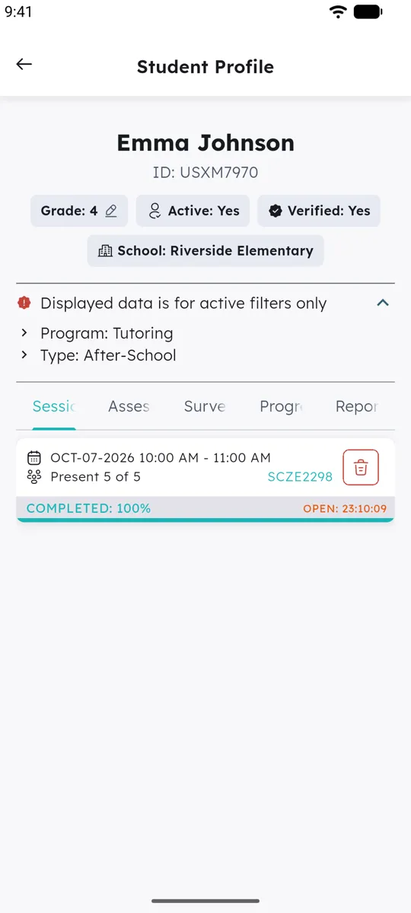
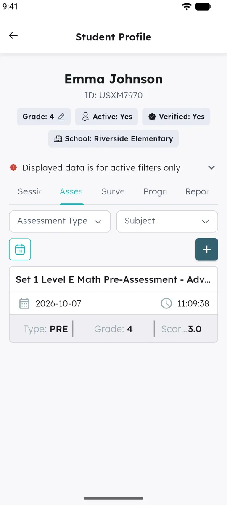
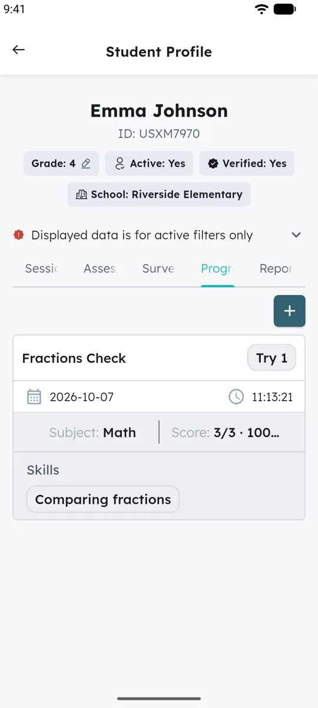
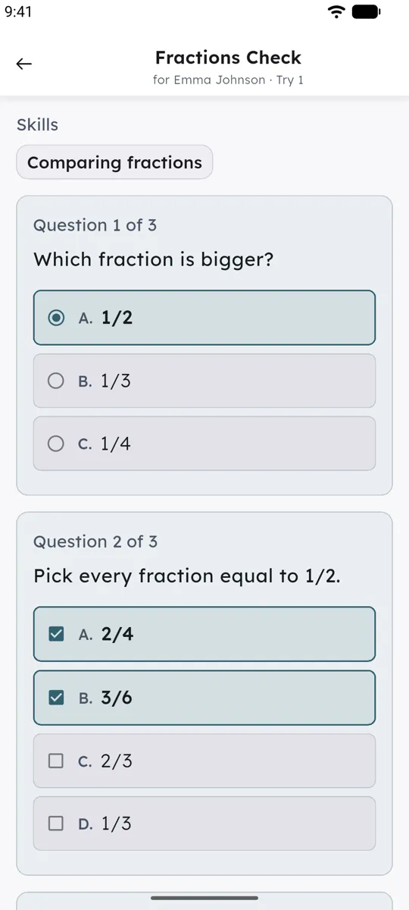
Assessments
An assessment records how a student did on a set of questions. You never build one from scratch — you start from an assessment bank and fill in that student’s answers.
Assessment banks
A bank is the template: subject, type (for example Pre or Post), grade, level, maximum score, the list of questions and any attached documents. Banks are the starting point for every assessment.
- Filters — narrow by Assessment Type and Grade. Grade starts at the student’s own grade.
- Multi-subject support 2.2.5 — a bank can cover more than one subject.
- Filtered by state 2.2.7 — you only see banks relevant to your state, which keeps long lists manageable.
- Progressive loading — banks load page by page as you scroll.
Assigning an assessment to a student
- In an Open session, tap a present student’s card.
- On the student’s ATTENDANCE DETAILS screen, make sure Subject is set, then tap Add Assessment (under Do you want to add an assessment?).
- The assessment banks are listed, with Assessment Type and Grade filters. Grade starts at the student’s own grade.
- Tap a bank card. Any assessments this student already has from that bank are listed.
- Tap + to add a new one, or tap an existing one to review it.
- In the assessment window:
- Open Document opens the question sheet on an Assessment Document screen inside the app (swipe between pages; Refresh retries). Open in Browser opens the same file in your web browser. On the browser version, Open Document opens it in a new tab.
- Set each question’s switch: knob to the right for correct, knob to the left for incorrect.
- Tap Save. While it saves, the button reads Saving..; then a message reads Assessment saved successfully! Cancel leaves without saving.
From the student’s profile
- On the profile’s Assessments tab, tap +.
- Pick a session. Only sessions where the student was present, and which aren’t locked or ended, are offered. If none qualify you’ll see No active sessions available.
- On ASSESSMENT BANKS, pick a set of questions.
- Mark each question on the NEW ASSESSMENT screen and tap Save.
If you see Subject not selected! followed by Go back to home and complete session., set the subject in that session first, then try again.
If you leave the answer screen with answers not yet saved, the app asks Looks like you have unsaved changes. No keeps you on the screen; Yes leaves and throws your answers away.
Score percentage, band level and focus standards are calculated on save. Reopen the assessment to see them.
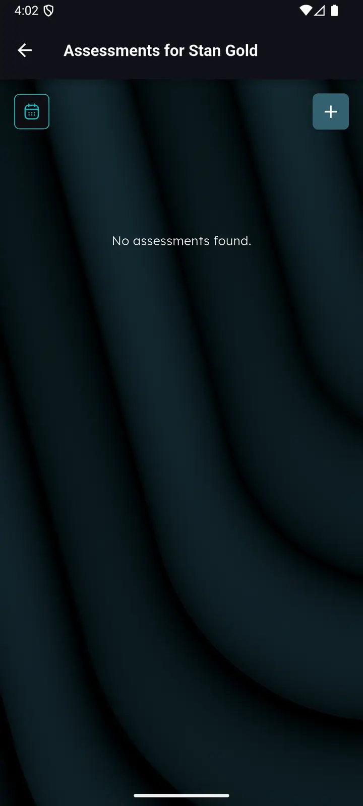
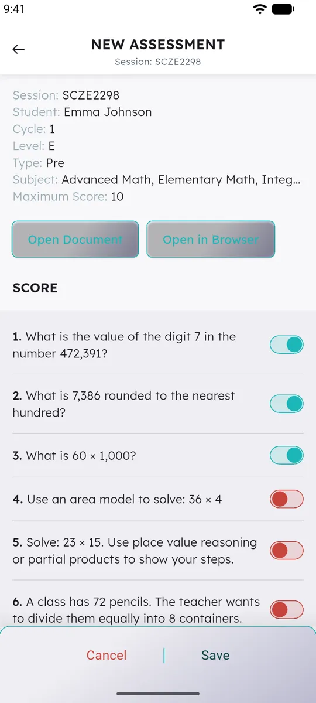
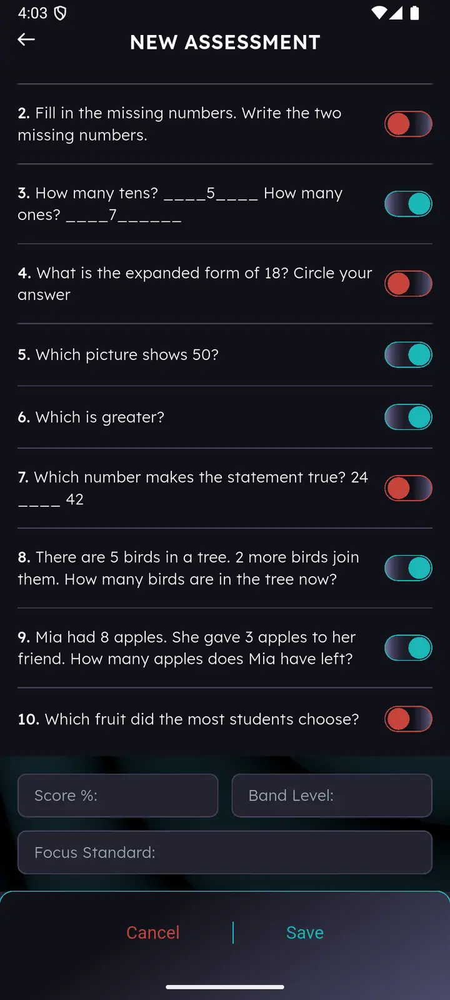
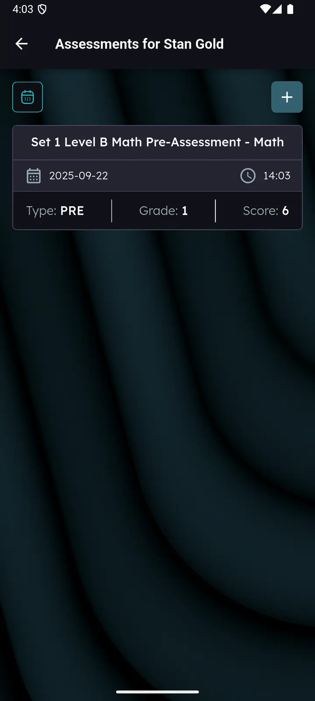
Two ways: open the student’s profile and check the Assessments tab, or look at the bank list while assigning — a bank with a filled title bar means this student already has assessments from that bank.
Assessments are switched on per program. If your program has them turned off, the button is hidden.
Surveys
Student Subject Comfort Surveys ask a student how confident they feel about a subject, on a five-point agree/disagree scale. They live on the student’s profile, not inside a session.
Survey banks
Like assessment banks, a survey bank is the template: subject, type, grade, maximum score and its list of statements.
Assigning a survey
- Open the student’s profile and go to the Surveys tab.
- Tap + to add a new survey.
- Choose a survey bank. Banks can be filtered by Grade, Subject and Type. The list is titled SURVEYS; Grade starts at the student’s own grade. A long list shows Showing x of y and loads more as you scroll, or with a Load More button.
- Work through the statements, marking each from 1 (Strongly Disagree) to 5 (Strongly Agree). The number you tap stays highlighted.
- Tap Submit Survey. It stays grayed out until every statement has a rating. After you tap it you’re back on the Surveys tab, and a message reads Survey added successfully!
Tapping a survey you’ve already submitted opens it read-only: the answers are shown and there’s no Submit Survey button.
With none yet, the tab reads No surveys for this student. Use the calendar button to show only one date’s surveys.
Completed surveys stay on the profile with their average score — 3.6 out of 5 in the example below.
Student groups
A group is a saved set of students you teach together. You make your own groups, and they save you re-picking the same names every time you start a session — though you can always pick students one by one with Continue Without a Group.
Visibility and scope
- Open a class from your Assignments list; the GROUPS tab sits beside SESSIONS and STUDENTS. The row of tabs can be wider than your screen — if GROUPS is cut off at the right edge, swipe the row sideways.
- Groups are scoped to that school plus program type — a group made for one program won’t show up under another.
- Pull down on the list to refresh. If pulling down doesn’t refresh the list, go back and open the assignment again. With no groups, you get an empty state and a create action.
- The tab shows a STUDENT GROUPS header with a sort button that reverses the order of the list, a + CREATE NEW STUDENT GROUP row, and one card per group.
- The groups you see are the ones you made yourself. Other educators don’t see your groups, and you don’t see theirs.
- Creating a group doesn’t change who is in the assignment — it’s a way of organizing students you already have.
Why bother: faster session setup, fewer attendance mistakes, and a clean separation between classes, cohorts and periods.
Creating a group
- Go to the GROUPS tab. (If you’re starting a session and have no groups yet, Check Groups page takes you there.)
- Tap + CREATE NEW STUDENT GROUP.
- Name the group. The student list only appears once there is a name (the screen says 1. Enter a group name to see the list of students. and 2. Select students to enable Save button). Use something you’ll recognize in a hurry, e.g. Grade 6 – Reading – Tue/Thu.
- Select students from the school list. Use search or Filter by Grades to cut it down. Each student you pick gets a highlighted border and the counter goes up by one. The + next to the filter adds a brand-new student.
- Tap Save Group. The counter in the button tells you how many are selected. At Save Group (0) it does nothing. While saving it reads Saving Group...; then you’re back on the GROUPS tab with the message Student group saved successfully!
Editing a group
- Open the GROUPS view.
- Tap the group you want to change. It opens EDIT STUDENT GROUP with the name, a member count and one row per member.
- Update the name, add students or remove them.
- Tap Save.
Changes take effect the next time you use the group. Sessions that have already ended stay exactly as they were.
Adding students who are already in the school’s list
- Tap + to open Select Students. The group’s current members are already ticked.
- Select one or more students and tap Apply Changes. The button shows the count, e.g. Apply Changes (5), and does nothing at (0). The member list becomes exactly what you ticked, so unticking a current member removes them.
- Tap Save on the group.
Apply Changes only updates the edit in progress. Nothing is stored until you tap Save on the group itself. If you’ve changed the name or removed someone and go back first, the app asks Looks like you have unsaved changes. Continue? — No keeps you on the screen with your changes; Yes leaves and discards them.
Adding a brand-new student
- From Select Students, tap + to add a student.
- Enter their details and tap Save. This puts them on the school’s student list — not yet in the group.
- Find them in the Select Students list and select them.
- Tap Apply Changes, then Save the group.
Removing a student from a group
- On EDIT STUDENT GROUP, press and hold (or double-tap) the member’s row to reveal its actions.
- Tap the trash icon. A dialog titled Remove Student asks Remove … from the group? and reminds you Changes won’t be saved unless you press “Save”.
- Tap Yes to take them off the list (No keeps them). The member count goes down by one.
- Tap Save.
You can also untick them in SELECT STUDENTS and tap Apply Changes.
Removing a student from a group does not remove them from the school’s student list.
Deleting a group New
Groups can now be deleted outright — earlier versions only let you rename and re-use them.
- In the GROUPS tab, press and hold the group card. A trash icon slides into view at the right end of the card.
- Tap the trash icon. The group is deleted straight away — there’s no “are you sure?” question and it can’t be undone, so check you’ve got the right card first.
- A message appears: Student group “…” deleted successfully!
Deleting a group removes the saved set of names. Sessions already run with that group keep their attendance records. The students themselves stay in the assignment.
Best practices
- One purpose per group. Don’t mix programs or subjects in the same group.
- Descriptive names. Subject or level plus day or period, so the right group is obvious at a glance.
- Consistent naming. Pick a convention — Period 1 / Period 2, or A-Week / B-Week — and stick to it.
- Review monthly. Rename or delete groups you no longer use so the list stays short.
- Set groups up first. Make your groups on the GROUPS tab before you start a session. When you start one you can pick a group or Continue Without a Group, but not create one there.
Troubleshooting
I don’t see Groups at all
Open a class from your Assignments list. The GROUPS tab is often cut off at the right edge of the row of tabs — put your finger on the row and swipe left to bring it into view. In programs where you record how many students attended rather than each student by name, the tab reads This view is not supported for the selected options.
The + button is missing
If the school has no students yet, the STUDENTS tab reads No students found for this school. and shows an Add Student button instead of +. Tap that.
My changes disappeared
You almost certainly navigated away before tapping Save. Reopen the group and redo the change, saving at the end. If you changed the name or removed someone, the app warns you first — tap No to stay and save.
The screen vanished after I refreshed the browser
Don’t refresh the page while you’re creating or editing a group, choosing students, or adding a student. A refresh loses that screen; go back into the assignment and start again.
Inbox
Messages from your organization arrive in the Inbox tab rather than by email — schedule changes, reminders about unfinished sessions, program announcements.
- Two tabs — Unread and Read, each with a count badge. A tab with no messages shows no count. Opening a message moves it across.
- Open a message — tap it. The Message screen shows the title, From: and the sender, how long ago it was sent, and the full text.
- Delete a message — tap the trash icon at the right end of its row. The Delete Message dialog names the message and warns This cannot be undone. Tap Yes to delete it or No to keep it. The trash icon sits close to where you tap to open a message, so tap carefully.
- Scrolling — older messages load as you reach the bottom; the list ends with No more messages.
- Empty — an empty tab shows an inbox icon with No unread messages or No read messages. Pull down on the list to check for anything new.
- Unread count — while you have unread messages, a small number sits on the Inbox tab at the bottom of the screen. It goes down as you read them and disappears once everything is read.
- Reading the list — each row shows the sender’s initials and name, a time and the message title. An unread message has a bold title and a NEW label. Times read like
09:30(24-hour clock) for the last day, thenYesterday, then3d, then a date written day first:7/4means April 7, not July 4. - Help — the ? in the top-right corner opens a short Inbox Overview; tap Close to put it away.
- Web Reloading the page while a message is open shows Message not found; go back to the Inbox and open it again.
A session stays open for about 24 hours. If anything it needs is still missing when the time runs out, it locks, and the Inbox is where reminders about unfinished sessions land — a quick look before your first session is usually enough.
Your profile & settings
The Profile tab holds your own record, your settings, your password, the app version you’re running, help, and the way out.
Profile information
Your name, educator ID, email and phone number are shown here. They can only be changed by an administrator — if something is wrong, ask them or write to support. If your email or phone number is missing from your account, that row reads Unknown.
The version number (for example Version: 2.3.3) sits just above Change Password and Log out; the Login screen shows the same line. It’s the first thing support will ask for.
On a small screen or with large text, the panel holding Change Password and Log out can sit partly behind the tabs at the bottom. Scroll down to see all of it.
Changing your password
- Tap Change Password.
- Type your new password in Enter new password and again in Confirm password. Tap the eye icon in a box to show what you typed.
- Tap Save Changes. You’re returned to your Profile and a message reads Password changed successfully.
Your new password needs at least 8 characters, including an uppercase letter, a number and a special character such as !. If something is missing, a line under the box says what — for example Password must contain at least one number or Passwords don’t match — and nothing changes until it’s fixed. You don’t need your old password.
Settings New
Tap the gear icon at the top right of your details on the Profile screen.
| Section | What it does |
|---|---|
| Appearance | Choose Light, Dark or System. System follows your device setting. The one in use has a tick in its circle. The app changes straight away and remembers your choice. |
| Downloads | Shows how many assessment PDFs are stored on the device and how much space they use. Delete and free… deletes them all at once, without asking first; documents download again when you next open them. With none stored it reads Downloads folder is empty. Web Nothing is stored in the browser, so this always reads empty. |
Logging out
Tap Log out. You’re signed out straight away, with no confirmation, and back on the Login screen. If Remember me was checked, your email address is filled in; your password is not.
Closing the app does not sign you out — Presentify keeps you signed in between uses, so the next person to open it would land in your account.
Smartie, the in-app assistant
Smartie answers questions about using Presentify. Tap AI Assistant on your Profile screen to open the chat.
- Ask in plain language — “How do I create a new student group?” — and Smartie replies with the steps.
- A status line at the top shows Connected to Smartie, then Ready.
- It draws on this handbook, so it’s best at “how do I…” questions about the app itself.
Smartie says so itself when it greets you: treat its answers as preliminary, and check anything important against this handbook or with support. It has no access to your students’ data and cannot make changes in the app on your behalf.
Support
Reaching support from inside the app
The support address appears on two screens: the Login screen and your Profile screen.
- Tap the address — it’s copied, and a message confirms it.
- Press and hold — your email app opens a new message with the subject already filled in (your educator ID followed by Support Required). If no email app is set up, you’ll see Could not open email app; tap the address to copy it instead.
Most screens also have a ? help button in the top-right corner of the title bar, which opens a short explanation of that screen.
What to include
These five things resolve most tickets in one reply:
- The app version from the Login or Profile screen, and whether you’re on web, iOS or Android.
- The session code shown at the top of the session screen (e.g.
SCPJ1461) or the student ID involved. - Roughly what time it happened — it helps support find the right records.
- What you expected to happen, and what happened instead.
- A screenshot, if there’s anything to see.
Connection error. A banner reading Connection error. Please check your internet connection or server. means the app couldn’t reach Presentify. Your unsaved work stays on screen — save again once you’re back online.
Duplicate students, and duplicate sessions that have already ended or locked, can’t be removed from the app — contact support. A session that is still open can be deleted from its card (see FAQ). If a session closed before you finished, an administrator can reopen it; ask whoever manages Presentify for your program, or write to support.
Frequently asked questions
I’m having trouble logging in
- Most login problems come down to an out-of-date app. Install the latest version — or, on the web, hard reload.
- Tap Login issues? on the Login screen for the built-in checklist.
- Double-check that you’re using the credentials from your V2 registration email.
Where do I find my assignments?
On the Assignments screen, which opens straight after you log in. It starts with a shorter list of the assignments nearest today; tap Show All for the rest.
I didn’t get a password reset email
Check your Spam or Junk folder first. If nothing has arrived after a few minutes, make sure you typed the email address your account actually uses, then request the reset again — or contact whoever set up your account.
I marked a student present but completion still shows 0%
Marking someone present isn’t enough. Everything your program asks for has to be saved for that student — often time in, time out and a subject, sometimes a teacher. Until it’s saved, they don’t count toward completion — see Attendance details.
I can open a session but can’t change anything
It has closed. A session stays open for about 24 hours — its card counts down, e.g. OPEN: 04:32:10 is four and a half hours left. When time runs out it moves to Ended if everything needed was filled in, or to Locked if it wasn’t, at whatever completion it had reached. Both are read-only. If one needs reopening, an administrator can do it — ask whoever manages Presentify for your program, or contact support.
How do I delete a duplicate student?
- There’s no way to remove a student from the school’s student list yourself.
- You can remove them from a student group, which keeps them out of your sessions.
- For the school’s student list itself, contact support.
How do I delete a duplicate session?
Updated An Open session can now be deleted from the app — tap the trash icon on its card in the Open tab and confirm. Locked and Ended sessions still need support.
How do I rename a student group?
Open the GROUPS view, tap the group, edit the name and tap Save.
How do I delete a student group?
Updated Groups can now be deleted: long-press the group card in the GROUPS view and tap the trash icon. There’s no confirmation and it can’t be undone. Sessions already run with that group keep their records. See Deleting a group.
How can I tell which students I’ve already entered assessments for?
- From the student’s profile — open the Assessments tab; everything already recorded is listed there.
- While assigning — in an open session, tap a present student, pick a subject to load the bank list, and look for banks with a filled title bar. A filled title bar means this student already has assessments from that bank.
How do I create a student group?
Go to the GROUPS view, tap + CREATE NEW STUDENT GROUP, type a name — the student list appears once there is one — select students, and tap Save Group. Full walkthrough: Creating a group.
Can I use Presentify on a computer?
Yes. The web app covers the same everyday work as the phone app. A few things differ: assessment documents open in a new browser tab instead of inside the app, nothing is downloaded to the computer, and instead of installing an update you hard reload the page when prompted.
What’s new
Educator-facing changes since version 2.1.9, which the previous edition of this guide described, taken from the app-store release notes. Internal work is left out.
- Session reflection per grade (in some programs) on the CREATE SESSION screen, using that grade’s focus standards — see Session reflections.
- Absence reasons for absent students in most programs, including Other with your own text.
- Progress checks show the skills they cover, when you open one and on the student profile.
- A save that fails now stays on screen and says so, instead of reporting success.
- Leaving with unsaved attendance changes now warns you first, on every device.
- Assignment status now follows the school’s local time.
- Light theme, with a switcher under the gear icon on your Profile screen — see Settings.
- Assignment cards show their status, and Show All adds status filters — see Reading the flags.
- Surveys are separate from assessments, with their own Surveys tab on the student profile.
- Student profile: a Progress tab, a grade filter, and editing a student’s grade.
- The Filters tab was removed: open an assignment to reach its sessions, students and groups. The tabs at the bottom of the screen are now Assignments, Inbox and Profile.
- Multiple session reflections per student per session.
- Progressive loading in the assignments list.
- Improved focus standards listing in attendance details.
- Assessment banks filtered by state, so lists are shorter and more relevant.
- Subject topics became part of session reflections. (Topic and Rating are now separate boxes on Attendance Details.)
- Multi-subject support for assessments.
- PDF download removed from student reports.
- Student Report added to the student profile — educator notes, session reflections and assessments per subject.
- New session time picker.
- Main filters reworked to district → school → program. (The Filters tab was later removed; assignments are now the way in.)
- Locked sessions where you enter a number of students can no longer be edited.
- Web Press Enter to submit the login form; browser back button behaves correctly.
- Other now sits at the end of the subject list.
- Focus standards filtering.
- Progressive loading for assessment banks.
- Scores support decimals.
- Surveys renamed Student Subject Comfort Surveys.
- Add Assessment is hidden in programs that have assessments switched off.
A Progress tab on the student profile with short questionnaires. Some questions take one answer, some take several; each student gets up to three attempts per check. Most are scored for you; on some you mark each answer yourself.